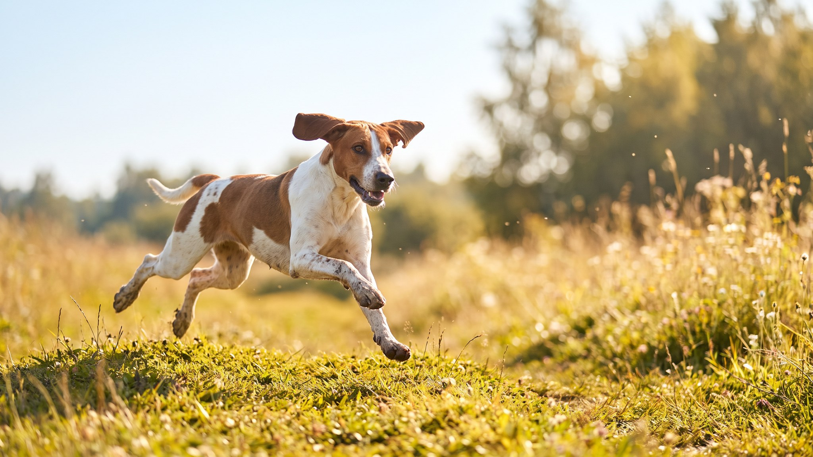

Представьте собаку, выведенную для того, чтобы часами гнать зверя по лесу голосом, который слышно за километр. Это русская пегая гончая. В квартиру её берут всё чаще — за добрый нрав и красоту, — и там же чаще всего разочаровываются. Ниже честно: сколько нагрузки ей нужно, зачем крепкий поводок и кому порода точно не подойдёт.
🐾 У вас русская пегая гончая?
AnimaLife соберёт уход под породу: к каким болезням есть склонность, что проверять по возрасту, чем кормить и когда пора к врачу. Бесплатно, прямо в мессенджере.
Собрать план ухода → Собрать в MAX →
У вас iPhone? AnimaLife есть в App Store
Русская пегая гончая (раньше — англо-русская) — отечественная охотничья порода среднего размера, крепкая и выносливая, трёхцветного «пегого» окраса. Выводили её для гона зайца и лисы: собака должна идти по следу много часов и вести охотника голосом. Отсюда — звучный, красивый лай и невероятная работоспособность.
В быту это дружелюбная, уравновешенная собака, хорошо ладящая с людьми. Но вся её психика заточена под работу, и это определяет всё остальное.
Это не собака для двух прогулок по 15 минут. Гончей нужны длинные активные выходы и возможность бежать, а не только шагать рядом.
Два врождённых качества, о которых нужно знать заранее. Первое — голос: гончая лает звучно и охотно, и соседям в тонких стенах это может не понравиться. Второе — инстинкт преследования: учуяв след кошки, белки или зайца, собака «уходит в поиск» и перестаёт слышать хозяина.
Вывод практичный: отпускать с поводка такую собаку можно только там, где вы уверены в безопасности, и после серьёзной работы над подзывом. Прочная амуниция и длинный поводок — ваши основные инструменты.
С шерстью всё просто: короткая, плотная, достаточно вычёсывания раз в неделю (чаще в сезон линьки). А вот что требует внимания:
Русская пегая гончая — прекрасный компаньон для активного человека, охотника или любителя долгих вылазок на природу. Для тихой квартиры без нагрузок порода не создана — и честнее это признать до покупки щенка.
🐾 Ваш питомец — русская пегая гончая?
Заведите профиль в AnimaLife: приложение запомнит породу, возраст и вес и будет подсказывать по уходу именно для неё. Вопросы AI-ветеринару — круглосуточно и бесплатно.
Завести профиль → Завести в MAX →
У вас iPhone? AnimaLife есть в App Store
🐾 Понравился разбор?
Подпишитесь на канал — каждый день разбираем по одному тревожному симптому у кошек и собак: что в пределах нормы, а когда пора к врачу. Подпишитесь, чтобы не пропустить разбор, который может спасти здоровье вашего питомца.
Материал носит информационный характер и не заменяет очную консультацию ветеринара.